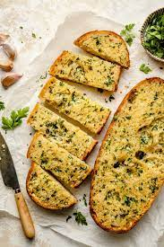

<!DOCTYPE html>
<html lang="en">
    <meta charset="UTF-8">
    <title>Garlic Bread</title>
</html>

<body>
    <h1>Garlic Bread</h1>
    
    <h2>Description</h2>
    <p>
        Garlic bread is a mandatory side for any Italian-American meal. It is simple and quick to make and goes well with almost any Italian-American dish.
    </p>

    <p>
        <strong>Ingredients:</strong>
        <ul>
            <li>One loaf of Italian bread</li>
            <li>Butter</li>
            <li>Garlic (minced)</li>
        </ul>
    </p>

    <p>
        <strong>Steps:</strong>
        <ol>
            <li>Slice the loaf of Italian bread in half lengthwise (see photo above).</li>
            <li>Generously coat each half of bread in melted butter.</li>
            <li>Generously coat each half of bread in minced garlic.</li>
            <li>Sprinkle salt on each half of garlic bread to taste.</li>
            <li>Cut each half of garlic bread into slices.</li>
            <li>Bake in the oven for 7 minutes.</li>
        </ol>
    </p>
</body>